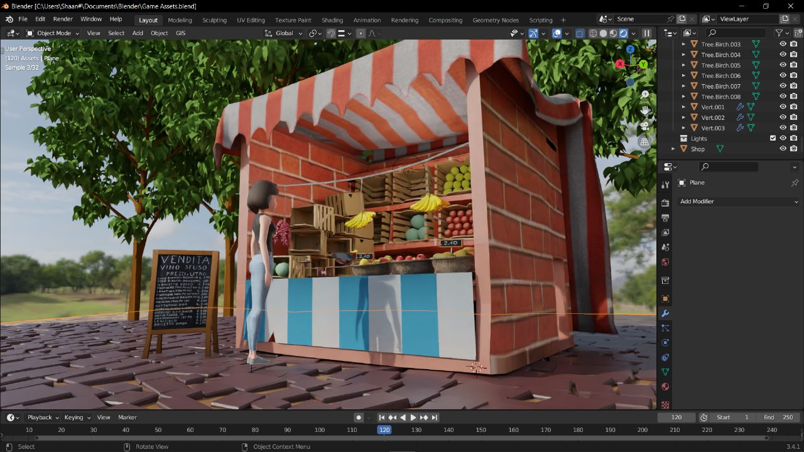
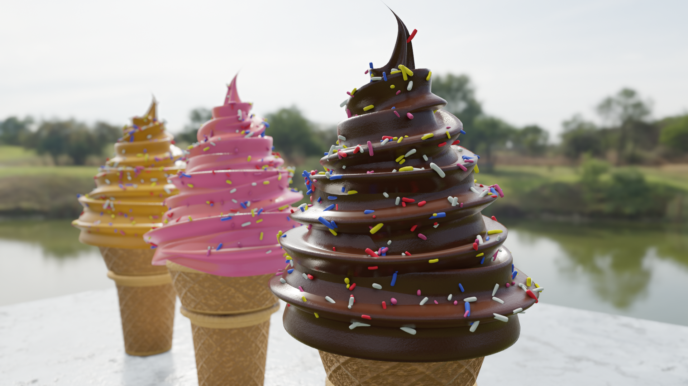

Bazaar Blitz
Our upcoming game offers players a chance to experience the diverse realities and infinite possibilities of Pakistan. Players can choose between running a Vegetable/Fruit Shop in the open market or a Local Store in their neighborhood. With a variety of authentic Pakistani food items available to sell, players must manage their resources, upgrade their shops, and navigate the demands of their customers to stay ahead of the competition.
As players progress through the game, they will unlock new food items, expand their inventory, and upgrade their shops to keep up with the fast-paced and ever-changing world of local markets. The game offers engaging gameplay, stunning graphics, and a deep attention to detail, capturing the essence of the multifaceted nature of Pakistan. Through this game, players will have the opportunity to express their creativity, showcase their skills, and reflect the unique history, culture, geography, people, and contemporary issues of Pakistan.
The Ice-Cream
I recently utilized Blender to craft a realistic 3D model of ice cream, which involved utilizing advanced techniques to create a high-quality render using the shader editor and realistic materials. My goal was to create a stunning visual representation of ice cream that could be used for marketing, advertising, or other purposes.
To achieve this goal, I invested considerable effort in optimizing the shader editor to create realistic textures and appearance for each part of the ice cream. I used a variety of techniques to replicate the texture of ice cream, cones, and any toppings added, ensuring that the final result looked authentic and convincing. Additionally, I spent time perfecting the lighting to generate a lifelike environment for the ice cream model. By combining natural and artificial light sources, I created the perfect atmosphere for showcasing the model's intricate details.